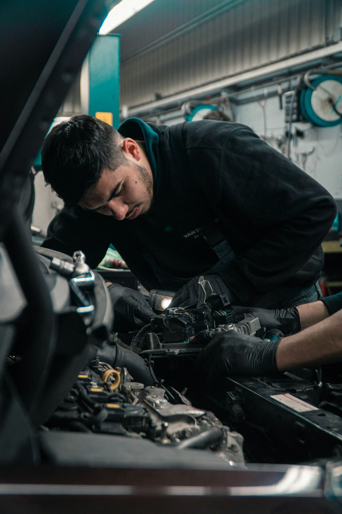

Uma visão de liderança sobre segurança, produtividade e valorização da vida no agronegócio.
Existe alguma meta mais importante do que voltar para casa em segurança?
Nenhuma tonelada de cana, nenhuma máquina trabalhando, nenhum resultado.
É sobre isso que eu gostaria de conversar hoje.
No agro trabalhamos com metas, planejamento, eficiência e custos. Precisamos colher e alimentar a indústria.
Não podemos comemorar uma meta alcançada se, para alcançá-la, colocamos alguém em risco.
Muitas ocorrências são precedidas por sinais, desvios ou condições que poderiam ter sido identificados.
Uma anormalidade percebida e não comunicada
Uma intervenção sem isolamento ou bloqueio
Seguir em frente “para não perder tempo”
Acontece em segundos
O atalho que parece economizar minutos pode ampliar muito o risco.
O acidente pode acontecer em segundos, mas muitas vezes começa muito antes — em pequenas decisões que deixamos de questionar.
A familiaridade com uma atividade pode reduzir a percepção do perigo.
Eu faço isso há 20 anos e nunca aconteceu nada.
É só dessa vez.
Todo mundo faz assim.

Experiência é saber fazer. Segurança é saber quando, como e em quais condições fazer.
O fato de nunca ter acontecido um acidente não significa que estamos trabalhando com segurança.
Pode significar apenas que ainda não aconteceu.
Será que, na prática, todos nós temos liberdade e segurança para tomar essa decisão?
A cultura aparece nas decisões tomadas quando existe pressão por resultado.
Não exigir comportamentos que a própria liderança não pratica.
Garantir que as pessoas compreendam os riscos e os procedimentos.
Valorizar quem comunica uma condição insegura.
Corrigir problemas — e não apenas cobrar resultados.
Perigos, quase acidentes e anormalidades.
Sem constranger ou retaliar quem relata.
Sobre o que foi comunicado.
Transformar relatos em melhorias.
Não basta pedir que as pessoas falem: é preciso demonstrar que a comunicação gera ação.
A cultura de segurança é revelada pelas decisões que os líderes tomam quando estão sob pressão.
Uma máquina pode parar e voltar a trabalhar.
Uma vida perdida não tem retorno.
Responsabilidades diferentes, um objetivo comum.
Oferecer condições, recursos, organização e prevenção.
Planejar, orientar, ouvir e corrigir.
Seguir procedimentos, usar proteções e comunicar riscos.
Identificar perigos e construir melhorias, conforme a NR-31.
Segurança não se terceiriza. Ela se constrói em cada decisão e em cada nível.
“Eu, como diretor, tenho responsabilidade sobre as decisões que tomamos e sobre as condições que oferecemos para o trabalho.”
Mas cada liderança, cada encarregado, cada operador e cada trabalhador também tem um papel fundamental.
A produção termina.
Os resultados são contabilizados.
Mas a vida precisa continuar.
Nenhuma tonelada de cana vale uma vida.
Cuide de você. Cuide de quem está ao seu lado.